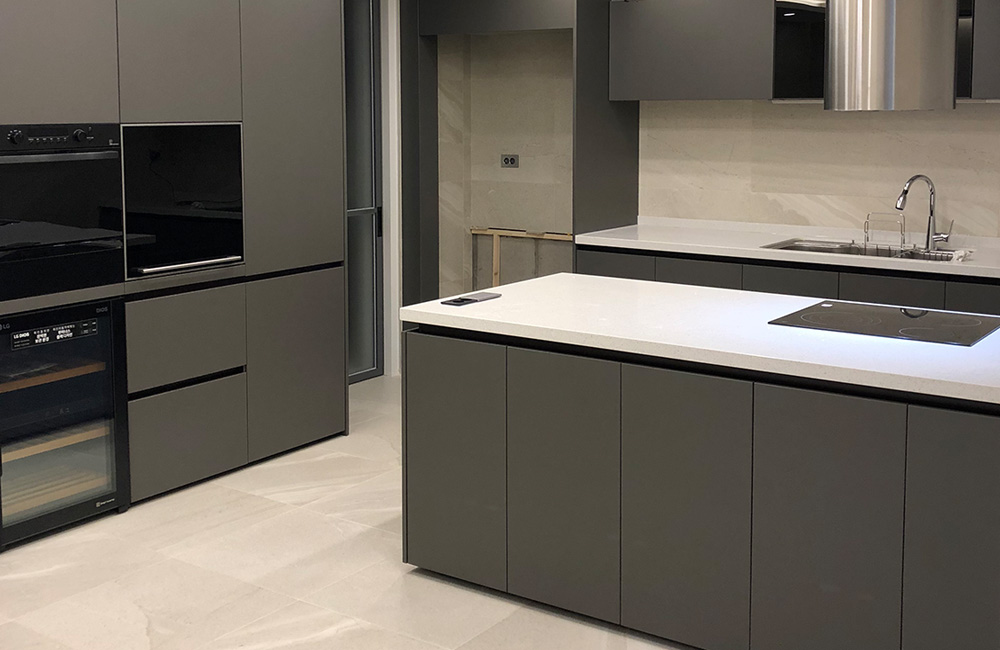
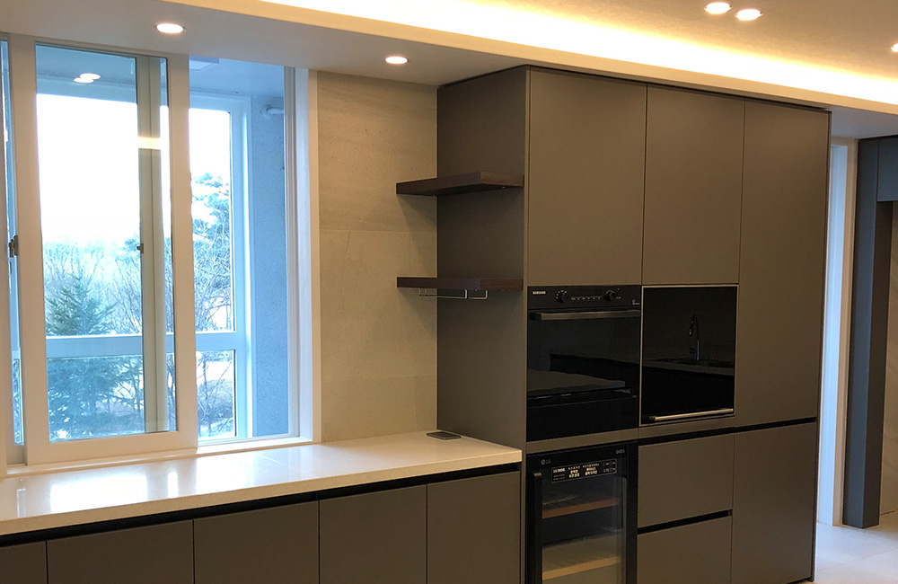

아이들이 행복한 집, 개포 LG자이 아파트

오늘 소개해드릴 공간은 아이들과 함께 하는 새아파트 홈스타일링 인테리어 공간
개포자이 아이파크아파트입니다.
이 집에서 가장 크게 변경된 부분은 주방한켠에 자리하고 있는 큰 펜트리 공간입니다.
신발장 뒤쪽과 연결된 이 펜트리 공간을 단순하게 창고용도로 사용하기에는
아쉬움이 많이 남아 아이들을 위한 공간으로
만들어 주기로 계획했습니다.

새아파트 인테리어 거실꾸미기 심플 모던!
따뜻한 색감을 가진 알칸타라 원단 소파와 화이트 우드셔터를 매치해
따뜻한 느낌의 화이트 거실인테리어로 마무리했습니다.
율인테리어 디자인은 한분한분 상담을 통해
기본 인테리어는 물론 가족구성원과 필요공간에 따른 공간배치, 소품요소까지도 함께 상담합니다.
새아파트 인테리어 내용이 더 궁금하시면 상담문의 주세요.